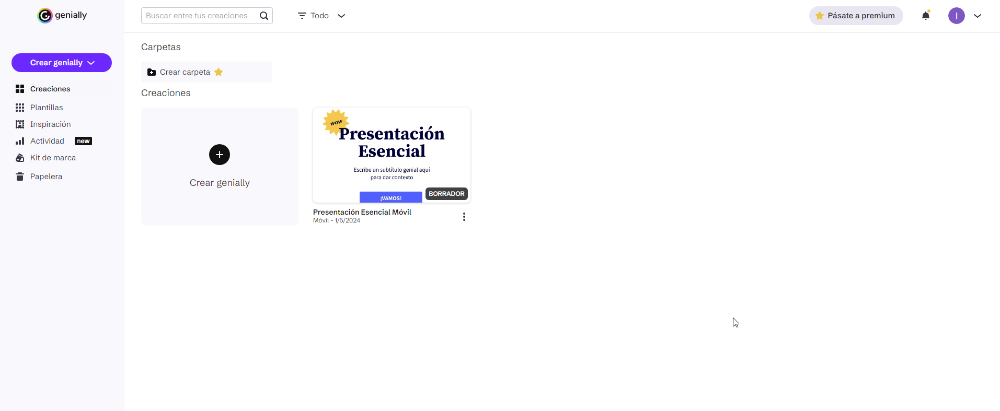
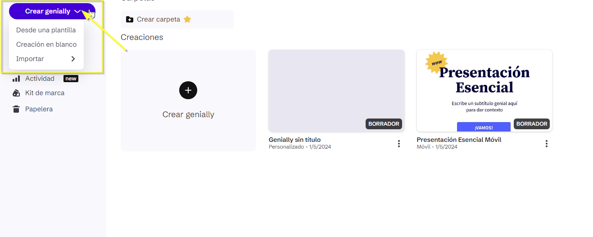
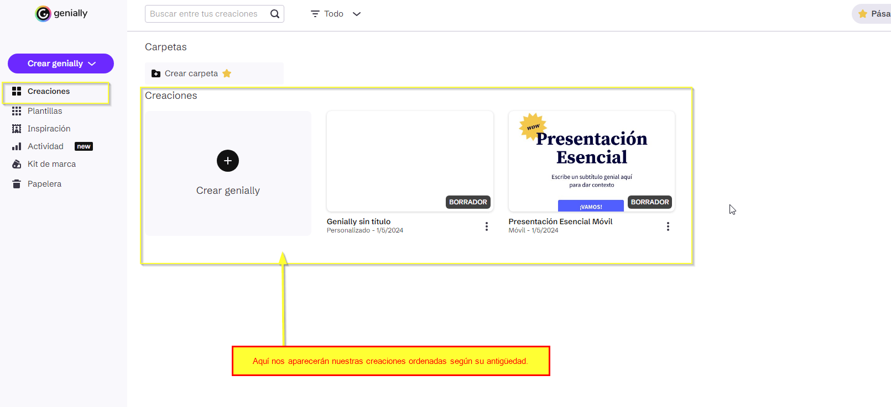
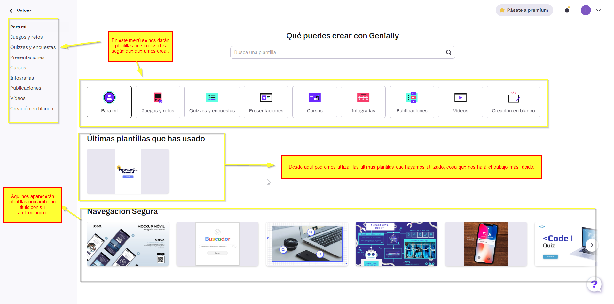
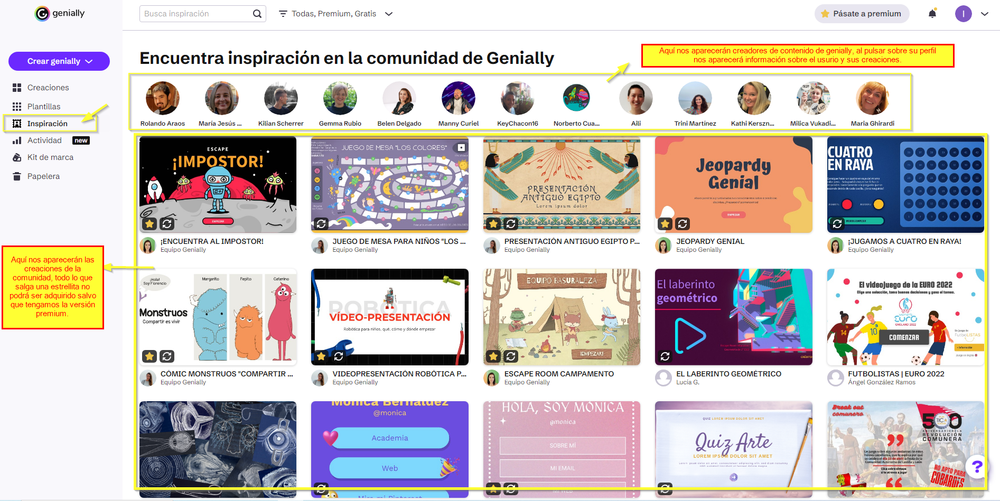
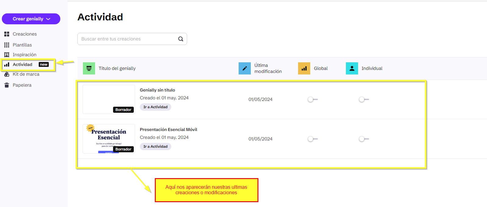
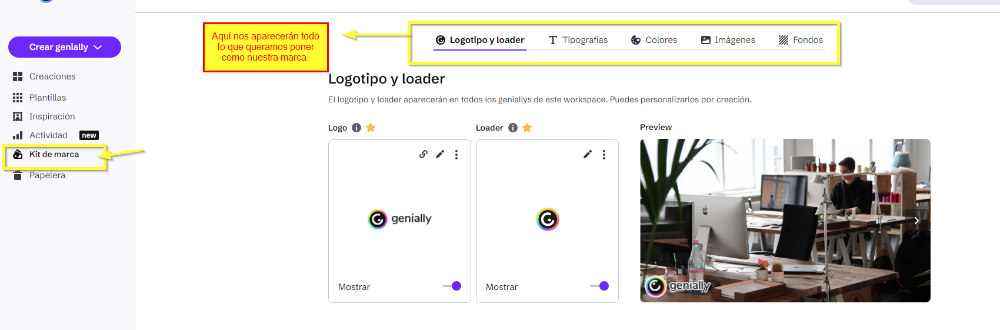
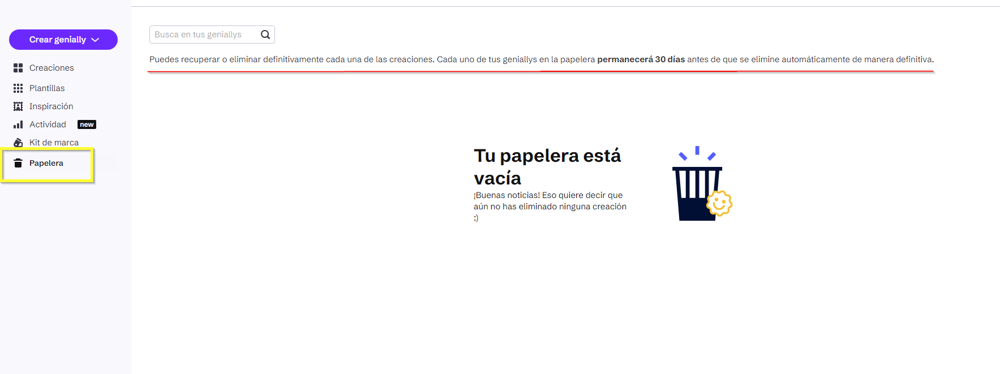

Menú principal
- Este es la interfaz del menú principal de Genially, a continuación explicaremos para que sirve cada apartado que nos aparece en pantalla.

1. Crear Genially
- Desde este apartado podremos crear nuestra presentación.
- Al pulsar sobre el, nos saldrán 3 opciones:
- "Desde una plantilla": crear una presentación Genially desde una plantilla.
- "Creación en blanco": crear una presentación Genially sin plantillas, en blanco.
- "Importar": que es una opción que nos permite importar presentaciones con la versión de pago: Powerpoint, Documento PDF y Google Slides; desde la versión gratuita únicamente nos permite importar imágenes de nuestro equipo.

2. Creaciones
- Desde este apartado podremos ver las presentaciones Genially que hemos creado, esta nos saldrán a la izquierda.

3. Plantillas
- En este menú podremos elegir plantillas para hacer un tipo de presentaciones u otro. Al pulsar sobre "Plantillas" nos aparecerá el siguiente menú:

4. Inspiración
- En este apartado podremos ver obras de la comunidad de Genially, podemos ver desde juegos hasta presentaciones sobre un tema en concreto, las plantillas creadas por el equipo de genially solo se podrán adquirir utilizando la versión de pago, pero se pueden utilizar gratuitamente.

5. Actividad
- En este apartado nos aparecerán nuestras ultimas creaciones y modificaciones.

6. Kit de marca
- En este apartado que es parte de la versión premium, podemos crear nuestros propios conjuntos de colores, tipografias, imagenes y fondos. Esto nos sirve para crear como nuestra propia identidad y marca.

7. Papelera
- En este apartado veremos todo las presentaciones que hayamos eliminado.
